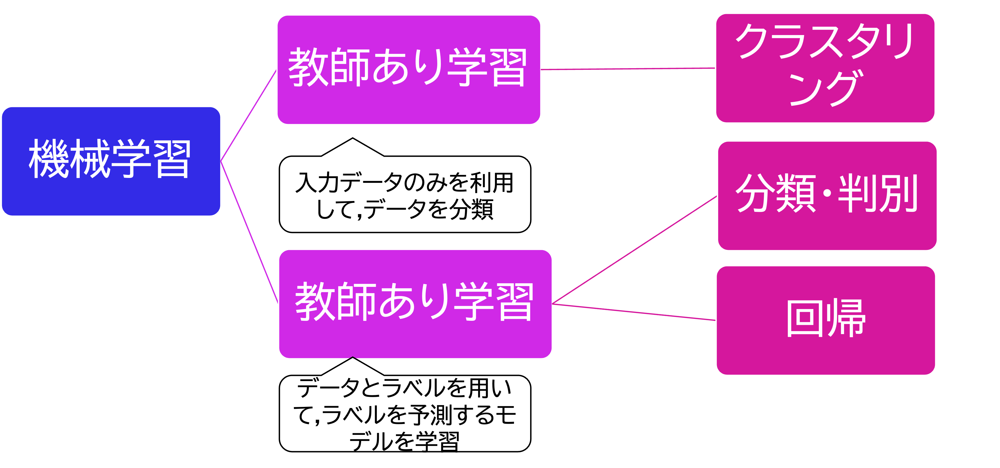
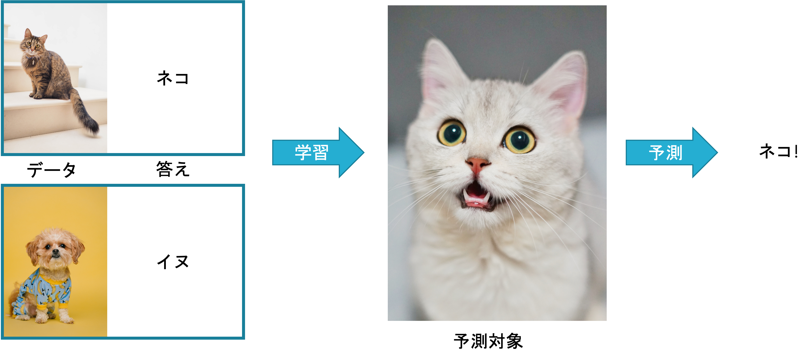
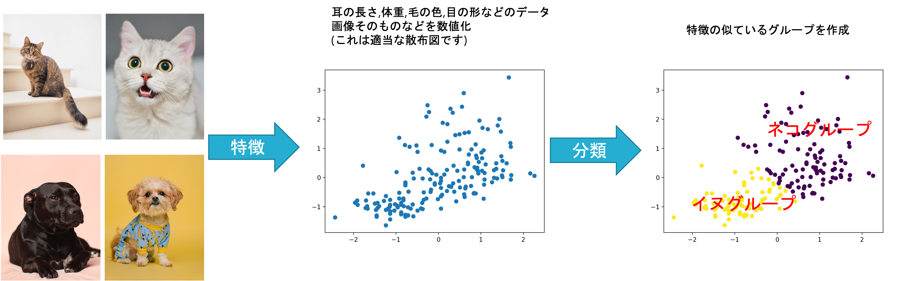
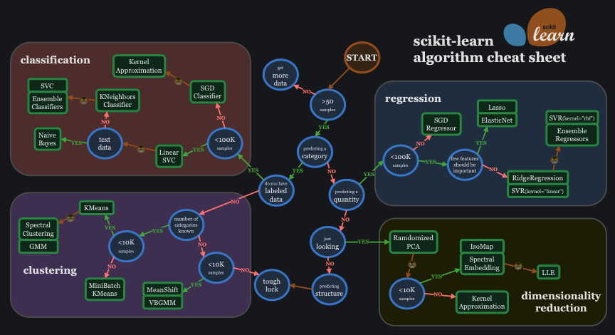
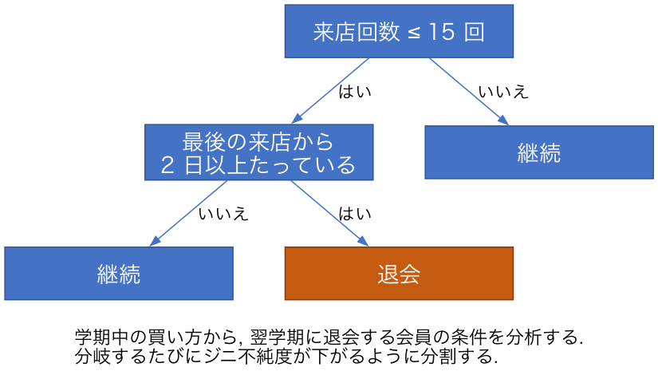
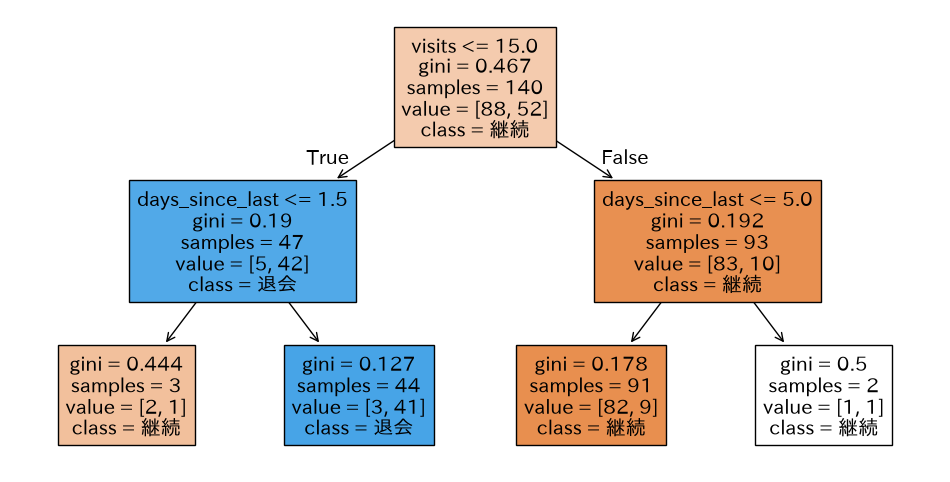
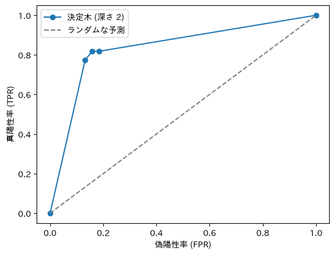
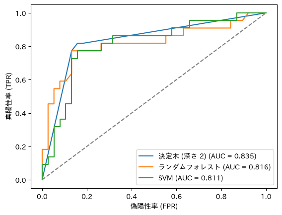

データサイエンス実践 Ch6 機械学習の枠組みと決定木
資料
人工知能の歴史
この講義は, 文部科学省の定める「数理・データサイエンス・AI 教育プログラム」の一環ですが, 統計, 機械学習, AI, データサイエンスなどの違いはそれほどはっきりしていません. このことは第2章でも扱いました.
AI は Artificial Intelligence (人工知能) の略語です. 世の中では, 様々なものが AI と呼ばれており,
- Automated Instruments (自動化されたなにか)
- Anything IT-related (IT に関連したなんでも)
などの AI という用語の濫用を揶揄する言葉もあります.
AI が研究の課題として最初に提起された 1956 年のダートマス会議の提案書では AI の研究を以下のように定義しています.
この研究は, 学習のあらゆる側面, あるいは知能のその他の特徴は原則として, 機械がそれをシミュレートできるほど正確に記述できるという推測に基づいて進められる.
機械に言語を使わせ, 抽象や概念を形成させ, 現在人間にしかできないような種類の問題を解決させ, 自らを向上させる方法を見つける試みがなされる.
注意深く選ばれた科学者たちがひと夏の間, 一緒にこの問題に取り組めば, これらの問題のひとつやふたつに大きな進歩がもたらされると, 私たちは考えている.
このように当初の AI の定義によれば, AI は,
- 抽象や概念を形成する
- 現在人間にしかできないような種類の問題を解決し
- 自らを向上させる方法を見つける
ことができる機械であるとされています.
当初の AI 研究では, 特に 2 番目の問題解決に焦点を当てていました.
例えば, ノーベル経済学賞を受賞した, ハーバート・A・サイモンらが人間の問題解決の手法を模倣して作った最初期の AI であるGPS (General Problem Solver) 一般問題解決器が有名です.
GPS では, 「問題」を「現在と目標との差異」と定義して, 目標と現状の差を小さな差に分解し, それを順に解消していけば, おおよそすべての問題を解決できるとしました.
- 目標: 対象 A を対象 B に変換せよ
- 対象 A と対象 B を照合し差 D を見つけよ
- サブゴール D を縮小せよ
- サブゴール A’を B に変換せよ
- 目標: 対象 A と対象 B との間の差 D を縮小せよ
- D を縮小するのに適した作用子 Q を探せ
- 実行可能かどうかテストせよ
- サブゴール A に Q を適用して A’を作る
- 目標: 対象 A に作用子 Q を適用せよ
- Q の条件を A と照合し差を見つけよ
- サブゴール D を縮小せよ
- サブゴール A’に Q を適用せよ
(cf. Newell, Allen, and Herbert A. Simon: “GPS, A Program that Simulates Human Thought,”Lernende Automaten, Munchen (R. Oldenbourg, ed.) (1961), Reprinted in Computers and Thought(Feigenbaum and Feldman, eds.) (1963) )
しかしこの手法は, 目標と現状を明確に記述でき, 両者の差を測ることができ, その差を埋める手段が定まっている問題 (チェスや迷路など) にしか適用できませんでした.
その他にも, 基本的には当時の AI は, 「問題の解決の仕方」を人間が定義して, それを直接的にプログラムするという手法で開発されています.
その後, AI の発展は以下の年表のような歴史を辿ります.
| AI ブーム | 内容 |
|---|---|
| 第1次 AI ブーム | • 1956年: ダートマス会議でスタート • 一般問題解決器 (現状と目標との差異) • 一般的な問題解決の手順を, 人間が条件分岐などで直接プログラム • 1960年代はじめ: 機械翻訳の失敗で収束 |
| 第2次 AI ブーム | • 1980年代はじめ: エキスパートシステム, 機械翻訳 • 知識の活用を目指す (辞書などの知識をデータベースとして整理して利用) • 1980年代はじめ: 第5世代コンピュータープロジェクト • 1990年代はじめ: 知識導入・商業性で収束 |
| 第3次 AI ブーム | • 2010年から現在: ANN (Artificial Neural Network) の復活 • 検索エンジン研究で発達 • ゲームでの成功 (チェス, 将棋, 囲碁) • パターン認識での成功例 (音声解析, 画像解析など) |
| 第4次 AI ブーム | • 現在: 生成系 AI • 画像・動画・音声 |
(cf. 寺野隆雄, 生成系AIの歴史・原理・現状, 千葉商科大学 2023年 第1回FD 「生成系AIに関するFD」 ,2023/05/18)
この歴史のすべては扱いませんが, 第3次以降の AI ブームは, ダートマス会議の提案にある「3. 自らを向上させる方法を見つける」に関わる技術の発展によるものです.
本章では, この「自らを向上させる」機械である機械学習の概要と, 教師あり学習の手法の 1 つである決定木, 分類の評価の方法を扱います. 第7章以降では, 機械学習の手法として, クラスタリング, ニューラルネットワーク, 画像認識, 自然言語処理を扱います.
機械学習
これまで, 回帰などの手法によって, データを用いた予測や判別を行ってきました. 本章で学ぶ機械学習も予測や判別を行うための手法です.
例として, 以下の犬と猫の画像について考えてみましょう.

人間であれば, どれが犬でどれが猫であるかを簡単に判別できます. しかし, どのようにして判別しているかを人に説明できるでしょうか?
例えば, 上の画像であれば,
- 猫は鼻が赤く, 犬は黒い
- 猫は耳が立っており, 犬は耳が下がっている
などの違いがあるようにも思えますが, 鼻が黒い猫も, 耳が立っている犬もいます. 初期の AI 開発ではこのようなルールを人間が発見し, プログラムしていました. しかし, 画像から犬と猫を見分けるルールを明確に定義するのはなかなか難しい作業です.
そこで, AI の開発は, 「機械自体が判別のためのルールを発見する」ための学習方法をプログラムする方向に進み始めます. そのような手法全般を機械学習といいます.
機械学習の定義は様々ありますが, 有名なものに以下があります.
“Field of study that gives computers the ability to learn without being explicitly programmed” ((機械学習とは)コンピュータに, 明示的にプログラムされなくても学習する能力を与える学問分野)
Arthur Samuel (1959)
これまでに行ってきた統計学の主な目的は以下のようなものです.
- 記述統計学
- 集めたデータの特徴を代表値やグラフなどを用いて記述する
- 推測統計学
- データを利用してその背景 (母集団) を推測する.
いずれも, 得られたデータの特徴を知ることを目的としています.
一方で機械学習は, 得られたデータを利用して, 要約・予測・判別などの「判断」を機械に行わせることが目的であり, どのようにデータを利用して判断するか自体は機械が自ら学習します.
機械学習には大きく分けて「教師あり学習 (Supervised Learning)」と「教師なし学習 (Unsupervised Learning)」の2種類が存在します.

教師あり学習
訓練データ (データと答えのペア) を学習して, 未知のデータから答えを正しく予測する.

本資料では次のような教師あり学習を扱います.
教師なし学習
データの特徴 (ベクトル) をもとに, 似たものをグループ分け (クラスタリング) します.

本資料で扱う教師なし学習には, 次のようなものがあります.
教師あり学習
教師あり学習には多くの手法があり, 目的とデータの種類によって使い分けます. 次の図は, 機械学習用のライブラリ scikit-learn の開発者が示している手法の選び方です.

(出典: scikit-learn, Choosing the right estimator). データが 50 件以上あるか, 予測するのがカテゴリか数値か, といった問いに順に答えていくと, 使う手法の候補にたどり着く図です.本章では次のライブラリを使います. uv add しておいてください (scikit-learn は, import するときには sklearn と書きます).
uv add pandas matplotlib matplotlib-fontja scikit-learn予測技術の活用事例と現象のモデル化
教師あり学習による予測は, 身近なところで多く使われています.
| 分野 | 予測するもの | 予測に使うデータ |
|---|---|---|
| 小売 | 翌週の商品の売れ行き | 過去の売上, 曜日, 天気 |
| 会員サービス | 会員が退会しそうか | 利用の頻度, 最後の利用日 |
| 金融 | 貸したお金が返ってくるか | 収入, 過去の返済の記録 |
| 製造 | 機械が故障しそうか | センサーの値, 稼働時間 |
| メール | 迷惑メールかどうか | 本文の単語, 送信元 |
どの事例も, 予測したい結果 (目的変数) と, 結果に関係しそうな観測できる値 (説明変数) の組を過去のデータから集め, 両者の関係を学習して, 結果がまだ分からない新しいデータに当てはめています. 目的変数が数値なら回帰 (第5章), カテゴリなら分類です.
このように, 複雑な現象を「どの値が結果にどう影響するか」という入力と出力の関係に単純化して表すことを, 現象のモデル化といいます. 会員の退会は, 実際には卒業, 引っ越し, 店の品ぞろえへの不満など多くの事情で起こります. それらをすべて観測することはできないので, 観測できる値 (来店の頻度など) だけで退会のしやすさを表すモデルを作ります. モデルは現象そのものではなく, 目的に必要な部分だけを取り出した近似です. どの値を説明変数に選ぶかは, 分析の目的と, 現象についての知識 (第2章の分析設計) で決まります.
例題のデータ: 売店の会員の退会
こちらのデータは, ある大学の売店の会員 200 人について, 1 学期分 (4 月から 7 月) の購買記録を集計した値と, 翌学期に会員を退会したかどうかをまとめたものです (練習用に作成した架空のデータです). 同じ売店の購買記録は, 第7章でも使います.
| 列 | 内容 |
|---|---|
member_id |
会員番号 |
visits |
来店回数 |
amount_per_visit |
1 回あたりの購入額 (円) |
days_since_last |
最後に来店した日から学期末 (7 月 24 日) までの日数 |
share_meal, share_drink, share_snack, share_stationery |
購入額のうち, 食事, 飲料, 菓子, 文具が占める割合 |
churned |
翌学期に退会したら 1, 続けたら 0 (目的変数) |
import pandas as pd
df = pd.read_csv('data/member_churn.csv', encoding='utf-8-sig')
print(df[['member_id', 'visits', 'amount_per_visit', 'days_since_last', 'churned']].head())
"""
member_id visits amount_per_visit days_since_last churned
0 1001 27 468.5 0 0
1 1002 38 438.4 0 0
2 1003 32 451.2 0 0
3 1004 32 415.0 0 0
4 1005 28 440.4 0 0
"""
print(df['churned'].value_counts())
"""
churned
0 126
1 74
"""200 人のうち 74 人 (37%) が退会しています. 目的変数は churned, 説明変数は会員番号を除く残りの 7 列です.
決定木分析
データの各項目についての「はい/いいえ」の分岐を木の形に重ねて, 目的の値を予測する手法を決定木分析といいます. 目的変数がカテゴリの場合は分類木, 数値の場合は回帰木と呼びます.

上の図は, この後で売店の会員のデータから学習させる決定木を, 分岐の条件だけ残して描いたものです. 一番上の条件から順に「はい/いいえ」で進み, 行き着いた箱がその会員についての予測になります.
決定木は, 分類の性能では他の手法に劣ることが多いものの, 予測の根拠を図で示せて, 人が読んで理解しやすいという長所があります.
代表的なアルゴリズムに, CART (Classification and Regression Trees) があります. CART は, データを 2 つに分ける分岐を繰り返して木を作ります. 分岐の先にある箱をさらに分けていき, それ以上分けない末端の箱を葉といいます. 分岐の良さは, 分けた後のそれぞれのグループがどれだけ 1 つのクラスに揃っているかで測ります. その尺度がジニ不純度です.
- ジニ不純度 (Gini impurity)
I_G = 1 - \sum_{i=1}^{c} \left( \frac{n_i}{N} \right)^2
c: クラスの数, N: そのグループのデータの数, n_i: そのうちクラス i に属するデータの数.
グループがすべて同じクラスなら I_G = 0 で, 2 クラスが半々のときに最大の 0.5 になります. 例えば, 退会 41 人と継続 3 人の 44 人のグループなら,
I_G = 1 - \left( \frac{41}{44} \right)^2 - \left( \frac{3}{44} \right)^2 \approx 1 - 0.868 - 0.005 = 0.127
となり, ほぼ退会した会員だけのグループであることを表します. CART は, すべての説明変数とすべての分け目の候補について, 分けた後のジニ不純度 (2 つのグループのジニ不純度を人数で重み付けした平均) を計算し, それが最も小さくなる分岐を選びます. 分けたそれぞれのグループで同じことを繰り返し, グループが 1 つのクラスだけになるか, 指定した深さに達するまで木を伸ばします.
scikit-learn の DecisionTreeClassifier で, 退会を予測する決定木を作ります. モデルの性能を確かめるために, データを学習用 (訓練データ) と評価用 (テストデータ) に分けてから学習します (分ける理由は分類の評価で説明します).
import matplotlib.pyplot as plt
import matplotlib_fontja
from sklearn.model_selection import train_test_split
from sklearn.tree import DecisionTreeClassifier, plot_tree
X = df.drop(columns=['member_id', 'churned']) # 説明変数
y = df['churned'] # 目的変数
# 7割を訓練データ, 3割をテストデータにする (退会の割合を両方で揃える)
X_train, X_test, y_train, y_test = train_test_split(
X, y, test_size=0.3, random_state=0, stratify=y)
# 深さ2までの決定木を学習する
tree = DecisionTreeClassifier(max_depth=2, random_state=0)
tree.fit(X_train, y_train)
# 決定木を図にする
plt.figure(figsize=(12, 6))
plot_tree(tree, feature_names=X.columns, class_names=['継続', '退会'],
filled=True, impurity=True)
plt.show()
plt.close()
各箱の 1 行目が分岐の条件, gini がジニ不純度, samples がその箱に来た訓練データの人数, value が [継続, 退会] の人数, class が多い方のクラス (その箱に来たデータの予測) です. 条件を満たすデータは左へ, 満たさないデータは右へ進みます.
最初の分岐は来店回数 (visits <= 15) です. 来店回数が 15 回以下の会員 (左) は 47 人中 42 人が退会し, 16 回以上の会員 (右) は 93 人中 83 人が継続しています. 左側はさらに最後の来店からの日数で分かれ, 来店が少なく, 最後の来店から 2 日以上たっている会員は 44 人中 41 人が退会しています. この木からは, 「あまり来ない会員が, 学期末に向けて来なくなると退会しやすい」と読めます. 説明変数はほかに 5 つありますが, 深さ 2 の木ではこの 2 つだけが使われました.
学習したモデルでテストデータの退会を予測し, 正解と比べます.
pred = tree.predict(X_test) # テストデータの予測 (0 か 1)
print((pred == y_test).mean()) # 正解率
"""
0.8333333333333334
"""テストデータ 60 人のうち, 83% の会員について退会するかどうかを正しく予測できました.
分類の評価
訓練データとテストデータ
モデルの性能を学習に使ったデータで測ると, 実際より良く見えることがあります (第5章の回帰の評価と同じ理由です). 決定木の深さを制限せずに学習させると, この違いを確かめられます.
for depth in [2, None]: # None は深さを制限しない
t = DecisionTreeClassifier(max_depth=depth, random_state=0).fit(X_train, y_train)
print(depth, t.score(X_train, y_train), t.score(X_test, y_test))
"""
2 0.9 0.8333333333333334
None 1.0 0.7833333333333333
"""深さを制限しない木は, 訓練データを 1 人残らず正しく分類しています (正解率 1.0). しかしテストデータの正解率は 0.78 で, 深さ 2 の木 (0.83) より下がっています. 深い木は, 訓練データにたまたま含まれていた細かい違いまで分岐として覚え込むので, 新しいデータには役立たない分岐が増えます. 訓練データでは性能が高いのに, 新しいデータでは性能が上がらない (あるいは下がる) 状態を過学習といいます.
モデルの目的は, 結果がまだ分からない新しいデータを予測することです. そのため, 学習には使わずに取っておいたテストデータで性能を測ります. train_test_split はデータをランダムに分けるので, random_state で乱数を固定しておくと, 何度実行しても同じ分け方になります.
混同行列
正解率だけでは, どんな誤り方をしているかが分かりません. 分類の結果は, 正解と予測の組み合わせごとにデータの数を数えた表で確かめます. この表を混同行列といいます.
見つけたいクラス (ここでは退会) を陽性, もう一方 (継続) を陰性と呼ぶと, 2 クラスの混同行列は次の 4 つのマスからなります.
| 正解 \ 予測 | 陰性 (継続と予測) | 陽性 (退会と予測) |
|---|---|---|
| 陰性 (実際は継続) | TN (真陰性) | FP (偽陽性) |
| 陽性 (実際は退会) | FN (偽陰性) | TP (真陽性) |
T (True) と F (False) は予測が正しいかどうか, P (Positive) と N (Negative) は予測したクラスを表します. 例えば FN は「陰性と予測したが, それは誤りだった」, つまり退会を見逃した会員です.
from sklearn.metrics import confusion_matrix
print(confusion_matrix(y_test, pred))
"""
[[33 5]
[ 5 17]]
"""confusion_matrix の出力は上の表と同じ並びで, TN = 33, FP = 5, FN = 5, TP = 17 です. 実際に退会した 22 人のうち 17 人を退会と予測し, 5 人を見逃しました. 継続した 38 人のうち 5 人を, 誤って退会と予測しています.
Accuracy, Precision, Recall
混同行列の 4 つの数から, 目的に応じた指標を計算します.
- Accuracy (正解率): 全体のうち, 予測が正しかった割合.
\text{Accuracy} = \frac{TP + TN}{TP + TN + FP + FN}
- Precision (適合率): 陽性と予測したもののうち, 実際に陽性だった割合. 陽性という予測がどれだけ信頼できるかを表す.
\text{Precision} = \frac{TP}{TP + FP}
- Recall (再現率): 実際に陽性だったもののうち, 陽性と予測できた割合. 陽性をどれだけ見逃さずに拾えたかを表す.
\text{Recall} = \frac{TP}{TP + FN}
決定木の予測では, 次のようになります.
- Accuracy: (17 + 33) / 60 \approx 0.833
- Precision: 17 / (17 + 5) \approx 0.773
- Recall: 17 / (17 + 5) \approx 0.773
from sklearn.metrics import accuracy_score, precision_score, recall_score
print(accuracy_score(y_test, pred), precision_score(y_test, pred), recall_score(y_test, pred))
"""
0.8333333333333334 0.7727272727272727 0.7727272727272727
"""Accuracy だけで判断しない理由は, クラスの数に偏りがあるときに分かります. 例えば, 退会する会員が全体の 5% しかいない店で「全員が継続する」と予測するモデルは, Accuracy が 0.95 になります. しかし退会する会員を 1 人も見つけられないので, Recall は 0 です.
Precision と Recall のどちらを重く見るかは, 予測を何に使うかで決まります. 退会しそうな会員に割引券を送るなら, 見逃し (FN) は会員を失うことに, 空振り (FP) は割引券 1 枚分の費用につながります. 会員を失う損失の方が大きければ, 空振りが増えても Recall を上げたいと考えます. 逆に, 1 件ずつ担当者が電話をかけるような費用の大きい対応なら, Precision を重く見ます.
ROC 曲線と AUC
決定木は, 各データについて陽性である確率を出し, その確率が 0.5 を超えるなら陽性と予測しています (ちょうど 0.5 のときは陰性). この 0.5 を閾値といいます. 閾値を下げると陽性と予測する会員が増え, Recall は上がりますが, 空振り (FP) も増えます. 閾値を変えたときのこの関係をまとめて見るのが ROC 曲線です.
- 真陽性率 (TPR, True Positive Rate): Recall と同じ. 実際の陽性のうち, 陽性と予測できた割合.
\text{TPR} = \frac{TP}{TP + FN}
- 偽陽性率 (FPR, False Positive Rate): 実際の陰性のうち, 誤って陽性と予測した割合.
\text{FPR} = \frac{FP}{FP + TN}
閾値を 1 から 0 まで下げていくと, 陽性と予測する会員が増え, TPR と FPR はどちらも 0 から 1 へ増えていきます. 横軸に FPR, 縦軸に TPR をとり, 閾値ごとの点を結んだ曲線を ROC 曲線 (Receiver Operating Characteristic curve) といいます.
from sklearn.metrics import roc_curve, roc_auc_score
prob = tree.predict_proba(X_test)[:, 1] # 退会である確率
fpr, tpr, thresholds = roc_curve(y_test, prob)
print(roc_auc_score(y_test, prob))
"""
0.8349282296650719
"""
plt.plot(fpr, tpr, marker='o', label='決定木 (深さ 2)')
plt.plot([0, 1], [0, 1], linestyle='--', color='gray', label='ランダムな予測')
plt.xlabel('偽陽性率 (FPR)')
plt.ylabel('真陽性率 (TPR)')
plt.legend()
plt.show()
plt.close()
曲線が左上に寄るほど, 空振りを増やさずに陽性を拾えている良いモデルです. 左上の角 (FPR = 0, TPR = 1) は, すべての陽性を空振りなしで拾える完全な予測にあたります. 灰色の対角線は, 確率をでたらめに付けた場合 (どの閾値でも TPR と FPR が等しい) です.
ROC 曲線の下側の面積を AUC (Area Under the Curve) といいます. AUC は 0 から 1 の値をとり, 完全な予測なら 1, でたらめな予測なら 0.5 です. AUC は「退会した会員と継続した会員を 1 人ずつ選んだとき, 退会した会員の方に高い確率を付けている割合」とも解釈できます. 閾値を 1 つに決めなくてもモデルの良さを比べられるのが, AUC の利点です. この決定木の AUC は 0.835 です.
決定木の ROC 曲線は, 数個の点を結んだ折れ線になっています. 決定木が出す確率は, データが最後に行き着いた箱 (葉) の中の退会の割合なので, 深さ 2 の木では 4 通りの値しかとらないためです. 閾値の候補が少ないので, 閾値を細かく調整することはできません.
演習
Exercise DSP6-1
決定木の深さと過学習
本文のデータと分け方 (test_size=0.3, random_state=0, stratify=y) で, 決定木の深さ max_depth を 1 から 8 まで変えて学習し, 訓練データとテストデータでの正解率を求めて折れ線グラフにしてください. グラフから, 過学習が起き始める深さを読み取ってください.
提出ファイル名: dsp6-1.py
回答例
import pandas as pd
import matplotlib.pyplot as plt
import matplotlib_fontja
from sklearn.model_selection import train_test_split
from sklearn.tree import DecisionTreeClassifier
df = pd.read_csv('data/member_churn.csv', encoding='utf-8-sig')
X = df.drop(columns=['member_id', 'churned'])
y = df['churned']
X_train, X_test, y_train, y_test = train_test_split(
X, y, test_size=0.3, random_state=0, stratify=y)
depths = range(1, 9)
train_acc, test_acc = [], []
for d in depths:
t = DecisionTreeClassifier(max_depth=d, random_state=0).fit(X_train, y_train)
train_acc.append(t.score(X_train, y_train))
test_acc.append(t.score(X_test, y_test))
print(d, round(train_acc[-1], 3), round(test_acc[-1], 3))
plt.plot(depths, train_acc, marker='o', label='訓練データ')
plt.plot(depths, test_acc, marker='o', label='テストデータ')
plt.xlabel('決定木の深さ')
plt.ylabel('正解率')
plt.legend()
plt.show()
plt.close()1 0.893 0.817
2 0.9 0.833
3 0.914 0.833
4 0.943 0.817
5 0.95 0.817
6 0.979 0.783
7 0.986 0.783
8 0.993 0.767訓練データの正解率は深さとともに上がり続けますが, テストデータの正解率は深さ 2 と 3 で最大 (0.833) になり, 深さ 4 から下がり始めます. 深さ 4 以降は, 訓練データにだけ当てはまる分岐を増やす過学習が起きています.
Exercise DSP6-2
閾値を下げたときの Precision と Recall
本文の深さ 2 の決定木について, 退会と予測する閾値を「0.5 を超える」(predict の既定) から「0.3 以上」に下げると, 混同行列, Precision, Recall はどう変わるかを求めてください. 退会しそうな会員に割引券を送る目的では, どちらの閾値が望ましいかを, 理由とともに答えてください.
ヒント: tree.predict_proba(X_test)[:, 1] >= 0.3 で, 閾値 0.3 での予測 (True/False) が得られます.
提出ファイル名: dsp6-2.py
回答例
import pandas as pd
from sklearn.model_selection import train_test_split
from sklearn.tree import DecisionTreeClassifier
from sklearn.metrics import confusion_matrix, accuracy_score, precision_score, recall_score, roc_auc_score
df = pd.read_csv('data/member_churn.csv', encoding='utf-8-sig')
X = df.drop(columns=['member_id', 'churned'])
y = df['churned']
X_train, X_test, y_train, y_test = train_test_split(
X, y, test_size=0.3, random_state=0, stratify=y)
tree = DecisionTreeClassifier(max_depth=2, random_state=0).fit(X_train, y_train)
prob = tree.predict_proba(X_test)[:, 1]
for name, pred in [('0.5 を超える', tree.predict(X_test)), ('0.3 以上', (prob >= 0.3).astype(int))]:
print(name)
print(confusion_matrix(y_test, pred))
print(precision_score(y_test, pred), recall_score(y_test, pred))0.5 を超える
[[33 5]
[ 5 17]]
0.7727272727272727 0.7727272727272727
0.3 以上
[[31 7]
[ 4 18]]
0.72 0.8181818181818182閾値を 0.3 に下げると, 退会と予測する会員が 22 人から 25 人に増えます. 見逃し (FN) が 5 人から 4 人に減って Recall は 0.773 から 0.818 に上がり, 空振り (FP) が 5 人から 7 人に増えて Precision は 0.773 から 0.720 に下がります. 割引券を送る目的では, 退会する会員を 1 人失う損失が割引券 2 枚分の費用より大きいなら, 閾値 0.3 の方が望ましいと言えます. どちらが良いかは, 見逃しと空振りの損失の大きさを比べて決めます.
Exercise DSP6-3
説明変数を絞った決定木
来店回数 (visits) と最後の来店からの日数 (days_since_last) の 2 つだけを説明変数にして, 深さ 2 の決定木を学習してください. テストデータでの Accuracy, Precision, Recall, AUC を求め, 7 つの説明変数を使った本文の木と比べて, 何が言えるかを答えてください.
提出ファイル名: dsp6-3.py
回答例
import pandas as pd
from sklearn.model_selection import train_test_split
from sklearn.tree import DecisionTreeClassifier
from sklearn.metrics import confusion_matrix, accuracy_score, precision_score, recall_score, roc_auc_score
df = pd.read_csv('data/member_churn.csv', encoding='utf-8-sig')
X = df.drop(columns=['member_id', 'churned'])
y = df['churned']
X_train, X_test, y_train, y_test = train_test_split(
X, y, test_size=0.3, random_state=0, stratify=y)
X2 = X[['visits', 'days_since_last']]
t2 = DecisionTreeClassifier(max_depth=2, random_state=0)
t2.fit(X2.loc[X_train.index], y_train)
pred2 = t2.predict(X2.loc[X_test.index])
prob2 = t2.predict_proba(X2.loc[X_test.index])[:, 1]
print(accuracy_score(y_test, pred2), precision_score(y_test, pred2),
recall_score(y_test, pred2), roc_auc_score(y_test, prob2))0.8333333333333334 0.7727272727272727 0.7727272727272727 0.83492822966507194 つの指標は, 7 つの説明変数を使った本文の木とすべて同じです. 本文の深さ 2 の木も, 分岐に使ったのは来店回数と最後の来店からの日数の 2 つだけだったので, 同じ木ができています. このデータでは, 退会の予測に必要な情報はこの 2 つの変数にほぼ含まれています. 説明変数が少ないモデルは, 予測の根拠を説明しやすく, 集めるデータも少なくて済むので, 性能が同じなら少ない方を選ぶのが一般的です.
発展: ランダムフォレストとサポートベクターマシン
以下は授業では扱いません. 課題では, ここに挙げた手法から好きなものを選んで実施し, 最終回に発表してもらいます. どちらも本文と同じデータと分け方で, 決定木と比べます.
ランダムフォレスト
ランダムフォレストは, 少しずつ異なる決定木をたくさん作り, それらの予測を多数決 (確率なら平均) でまとめる手法です. 各木は, 訓練データから重複を許してランダムに選び直したデータで学習し, 分岐のたびに説明変数の一部だけをランダムに候補にします. 1 本の決定木は訓練データの細かい違いに引きずられやすいのですが, 違う誤り方をする木を多数まとめると, 誤りが打ち消し合って予測が安定します.
from sklearn.ensemble import RandomForestClassifier
rf = RandomForestClassifier(n_estimators=200, random_state=0) # 200本の木
rf.fit(X_train, y_train)
rf_prob = rf.predict_proba(X_test)[:, 1]
print(rf.score(X_test, y_test), roc_auc_score(y_test, rf_prob))
"""
0.8166666666666667 0.8157894736842106
"""
# 説明変数の重要度 (分岐でジニ不純度をどれだけ下げたか)
print(pd.Series(rf.feature_importances_, index=X.columns).sort_values(ascending=False).round(3))
"""
visits 0.246
days_since_last 0.222
share_stationery 0.178
share_meal 0.103
share_drink 0.097
amount_per_visit 0.081
share_snack 0.073
"""テストデータでの正解率は 0.817, AUC は 0.816 で, 深さ 2 の決定木 (0.833, 0.835) をわずかに下回りました. 説明変数の重要度は, 各変数による分岐がジニ不純度をどれだけ下げたかを, 全部の木で平均した値です. 来店回数と最後の来店からの日数が上位に来ており, 決定木の分岐と一致します. 3 番目の文具の割合は, 文具を中心に買う会員の来店回数が少ないことを反映していると考えられます.
サポートベクターマシン
サポートベクターマシン (SVM) は, 2 つのクラスを分ける境界を, 境界に最も近いデータ (サポートベクター) からの距離 (マージン) が最大になるように決める手法です. マージンを大きくとると, 新しいデータが境界の近くに来ても分類が揺らぎにくくなります. 直線で分けられないデータには, カーネルと呼ばれる関数でデータを曲がった境界で分けられるようにします (scikit-learn の既定は RBF カーネル). SVM は距離を使うので, 第4章と同じく説明変数を標準化してから使います.
from sklearn.svm import SVC
from sklearn.preprocessing import StandardScaler
from sklearn.pipeline import make_pipeline
# 標準化と SVM をつなげて1つのモデルにする
svm = make_pipeline(StandardScaler(), SVC(probability=True, random_state=0))
svm.fit(X_train, y_train)
svm_prob = svm.predict_proba(X_test)[:, 1]
print(svm.score(X_test, y_test), roc_auc_score(y_test, svm_prob))
"""
0.8 0.8110047846889952
"""make_pipeline は, 標準化 (StandardScaler) と SVM を順につなげて 1 つのモデルとして扱う関数です. 標準化の平均と標準偏差は訓練データから計算され, テストデータにも同じ値が使われます.
3 つのモデルの ROC 曲線を重ねて比べます.
for name, p in [('決定木 (深さ 2)', prob), ('ランダムフォレスト', rf_prob), ('SVM', svm_prob)]:
f, t, _ = roc_curve(y_test, p)
plt.plot(f, t, label=f'{name} (AUC = {roc_auc_score(y_test, p):.3f})')
plt.plot([0, 1], [0, 1], linestyle='--', color='gray')
plt.xlabel('偽陽性率 (FPR)')
plt.ylabel('真陽性率 (TPR)')
plt.legend()
plt.show()
plt.close()
ランダムフォレストと SVM は, 会員ごとに細かく異なる確率を出すので, ROC 曲線が多くの点を通る細かい階段になります. 閾値を細かく調整したいときは, こうしたモデルが使いやすくなります.
一方で, このデータでは AUC は決定木が最も高く, ランダムフォレスト (0.816) と SVM (0.811) は少し下回りました. このデータの退会は, 来店回数と最後の来店からの日数という 2 つの変数の単純な条件でほぼ決まっているので, 深さ 2 の決定木でも十分に表せたと考えられます. 複雑な手法がいつも良い結果を出すとは限りません. また, テストデータは 60 人しかいないので, AUC の 0.02 程度の差は, データの分け方 (random_state) を変えると入れ替わりうる大きさです. 手法を比べるときは, 分け方を変えて何度か評価し, 差が安定しているかも確かめます.